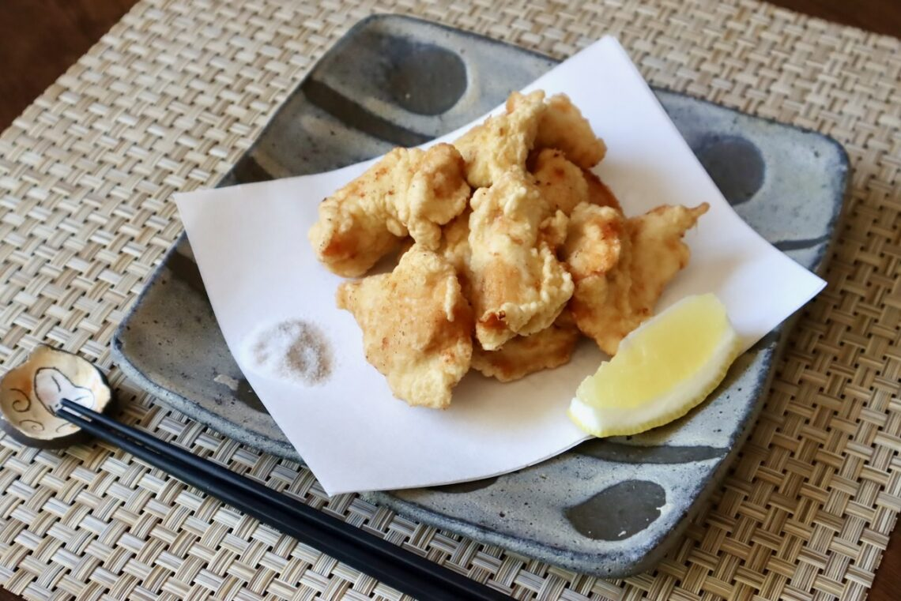

Chicken Tempura

Description
Chicken Tempura is deep-fried chicken breast pieces coated in Tempura batter. This hearty and delicious
chicken is flavored simply with salt, and it’s a more casual dish than the traditional and elaborate Tempura
dish with a variety of ingredients served with Tempura sauce. Variations of chicken Tempura are regional specialties
in western Japan, where the region is known for its thriving poultry industry, but it is a solid home cooking dish after all.
Chicken is relatively inexpensive and easily accessible, so chicken tempura has played an important role as a common food for
the general public. The preparation method – thinly slicing the chicken, coating it in batter, and deep-frying – allows for quick
cooking while providing a satisfying taste.
Ingredients
- 1 chicken breast large
- 1 tsp sake
- 1/4 tsp salt
- 1/2 tsp grated ginger root
- oil for deep frying
- salt
- pepper (optional)
Tempura Batter
- 1/4 cup flour
- 1/4 cup Katakuriko potato starch
- 1/4 cup cold water
- 1 egg
Steps
- Slice the chicken breast thinly and diagonally. In a bowl, mix the chicken, sake, salt, and ginger. Let the mixture marinate for 10 minutes.
- In a medium bowl, combine the flour and potato starch. In a separate bowl, mix the water and egg. Add the egg mixture into the flour mixture.
- Heat the deep-frying oil over medium heat to 375°F (190°C). Lightly coat the marinated chicken pieces in the batter.Deep-fry the battered chicken until golden brown and floating, about 2-3 minutes. Serve with salt and pepper.